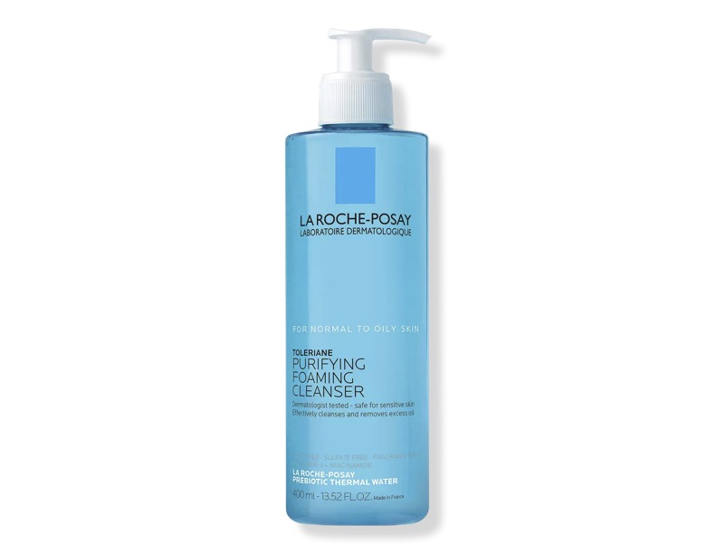

My 5 favorite Skin Care Products!
Here are my favorite Skin Care Products in a nutshell! (in no particular order)
{kind=link}


La Roche Posay : Purifying Foaming Face Wash for Oily Skin
- This is a purifying foaming face wash for combination and oily skin effectively removes dirt, oil, impurities and makeup.
- It has a refreshing gel texture transforms into a foam to leave the skin feeling fresh and comfortable with no pore-clogging residue.
Paula's Choice BHA Liquid Exfoliant
- This clinically proven gentle leave-on exfoliant with salicylic acid quickly unclogs pores, smooths wrinkles & evens skin tone.
- Use up to twice daily after cleansing & toning skin.
Play Everyday Lotion SPF 50 with Sunflower Extract
- This hydrating, fast-absorbing sunscreen formula provides high performance protection from UVA, UVB and IRA rays, while also helping prevent photoaging and dehydration..
- Formulated it to be water- and sweat-resistant for 80 minutes, so it's perfect for a day of play (i.e. things like running or going to the beach.
La Roche Posay: Double Repair Face Moisturizer
- Double action helps repair skin’s natural protective barrier after 1-hour and provide up to 48-hour hydration.
- Its lightweight cream texture easily absorbs into the skin to provide immediate comfort. Suitable for all skin types, including sensitive.
Hyaluronic Acid Serum - Good Molecules
- Formulated with hyaluronic acid, this water-light serum draws moisture to the skin for long-lasting hydration.
- With just one use, skin appears smooth, supple, and well-hydrated.